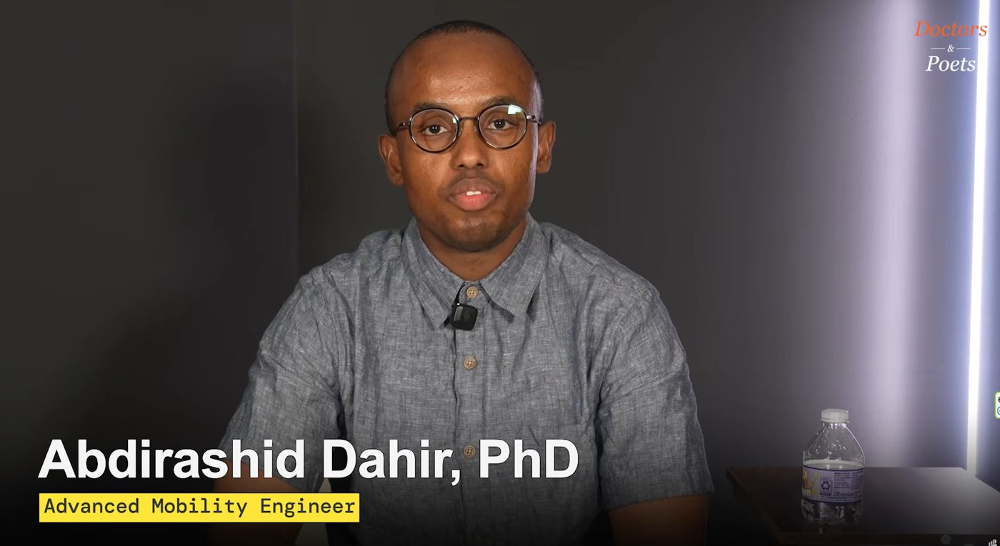
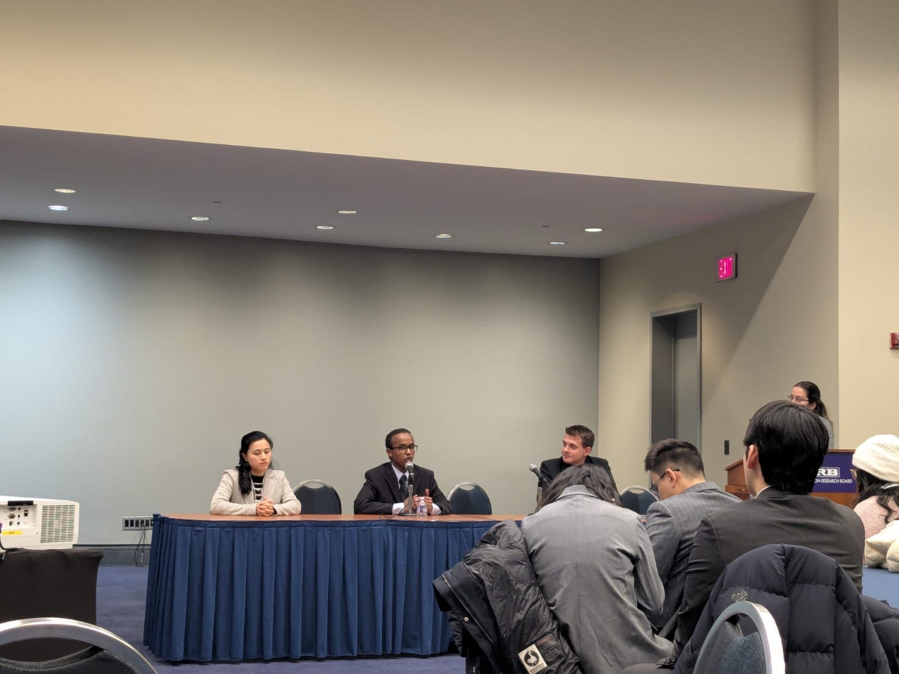
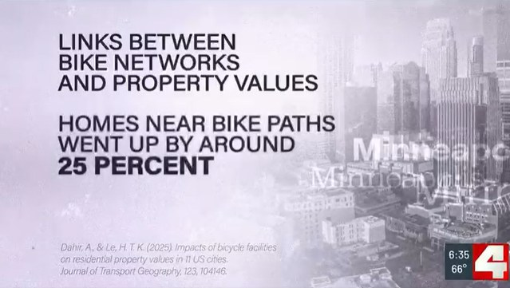

On video

Jul 2026
Inside industry: Building geospatial tools for state EV charging infrastructure and connected vehicle programs
Jan 2024

Invited talks and panels
Nov 2024
Impacts of bicycle facilities on residential property values
Nov 2024
Preparing a planning workforce for the energy transition
Oct 2024
Advancing the energy transition with innovation in education and inclusion of social science
Apr 2024
Sustainability and design
Apr 2022
Urban and intercity transit lessons from South Korea
Aug 2021
HSR construction costs in South Korea
Jun 2021
Last-mile mobility: Seoul's scooter problems
Nov 2020
Demystifying Seoul subways
Conference presentations
Mar 2025
Integrating transportation, energy and climate justice for just transition to electric vehicles: A mixed-methods study of disadvantaged communities
Jan 2025
Just transition to electric vehicles in disadvantaged communities
Jan 2025
Just transition to electric vehicles in disadvantaged communities
Nov 2024
Just transition to electric vehicles in disadvantaged communities
Sep 2024
Just transition to electrified mobility and home energy in disadvantaged communities: Evidence from community-engaged work in Columbus, OH
Jun 2024
Impacts of bicycle network on bicycle traffic over time in 12 cities
Jan 2024
Impacts of bicycle network on bicycle traffic over time in 12 cities
Sep 2023
How industrial agglomeration and urban fabrics affect travel mode choice over time
Sep 2023
Impacts of bicycle facilities on residential property values in 11 US cities
Apr 2023
An integrated framework for just transition to electric mobility
Jan 2023
Impacts of bicycle facilities on residential property values in 11 US cities
Video
Video
Aug 2019
Peak car use: Transforming urban roads and streets through movement and place design
Media coverage and writing
